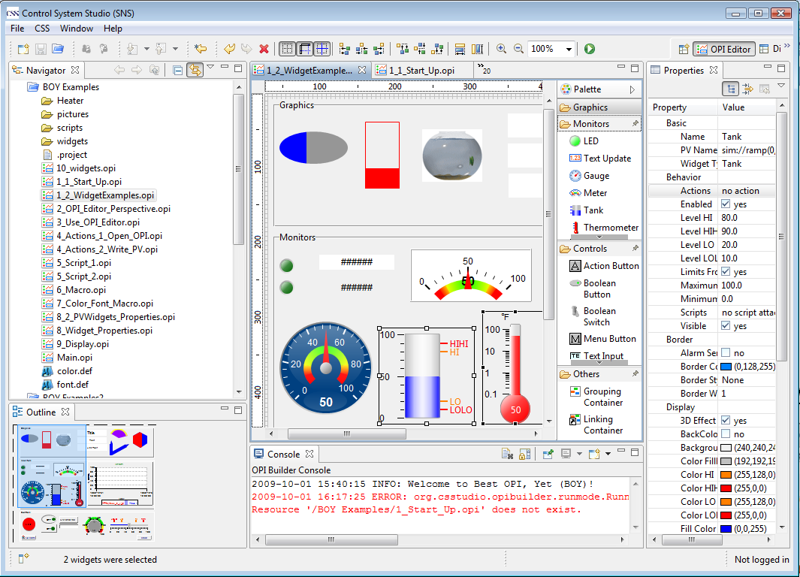

The OPI Editor Perspective has all the necessary workbench part prearranged so that you can easily start your OPI development. The OPI Editor Perspective can be opened from menu: Window->Open Perspective->OPI Editor .
There are four views surrounded with the editing area:
The OPI Editor Perspective:

The perspective can be rearrange to your favorite. The views can be rearranged by resizing or dragging it to another place. You can also close a view and then re-open it from menu Window->Show View. You do not need to worry about messing up the perspective, because the the perspective can be reset by right clicking the perspective icon and select "Reset".